Review Board:
Review board - Standard review creations, regardless of (or standardised by) medium, favorite character/song
| |||
| |||
| |||
|
Characters I love:
| 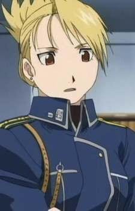 Riza Hawkeye |
 Misato Katsuragi |
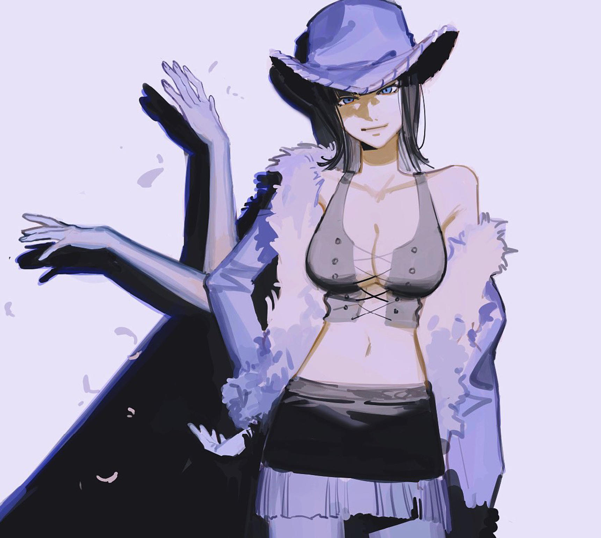 Nico Robin |
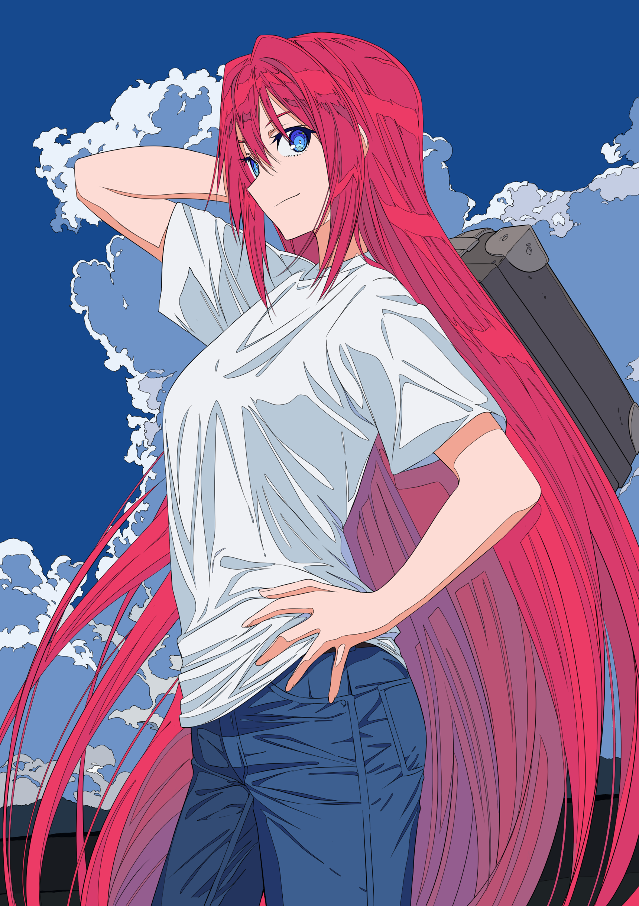 Aoko Aozaki |
|---|---|---|---|
| 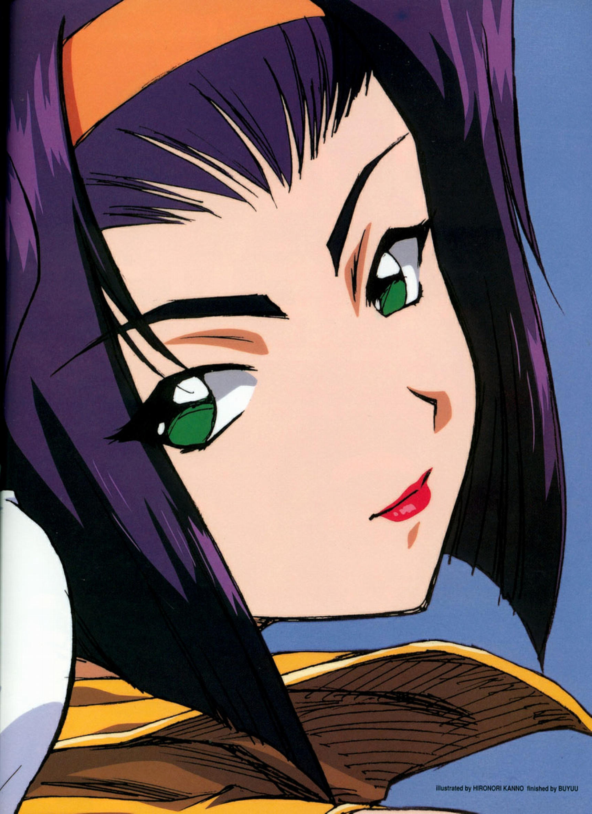 Faye Valentine |
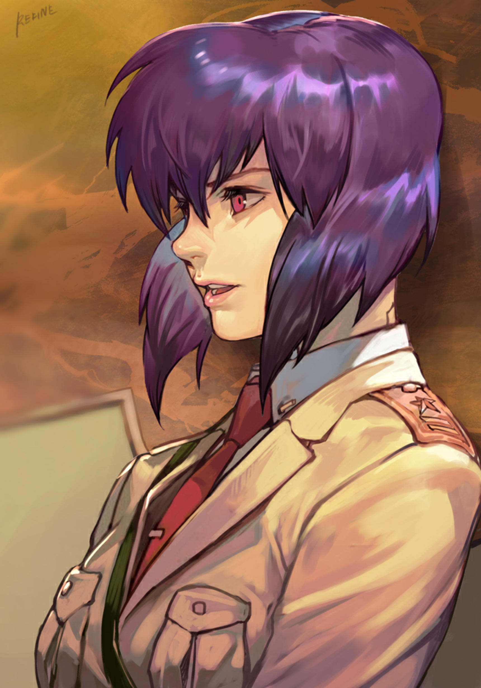 Motoko Kusanagi |
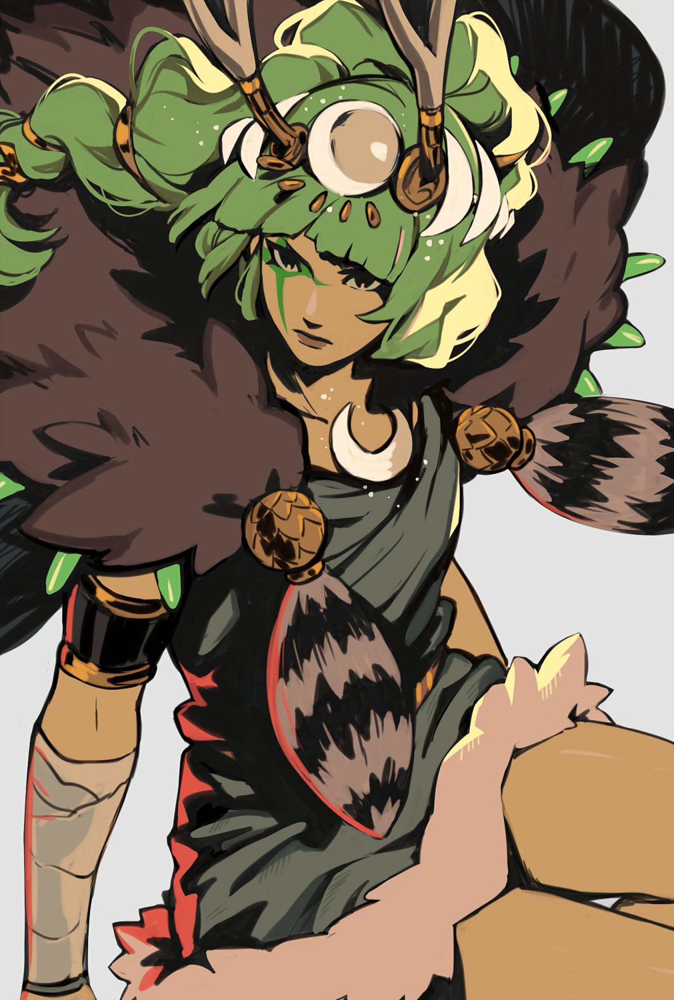 Artemis |
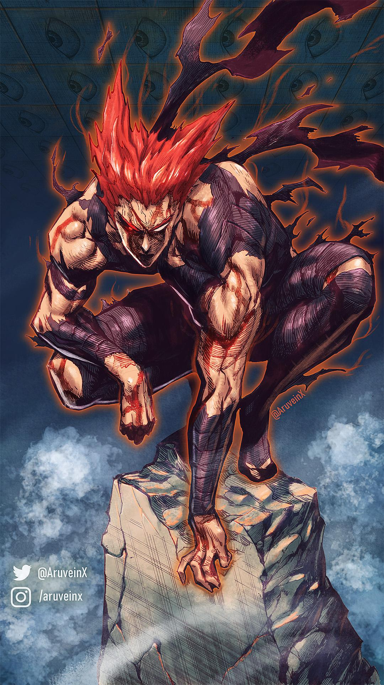 Garou |
| 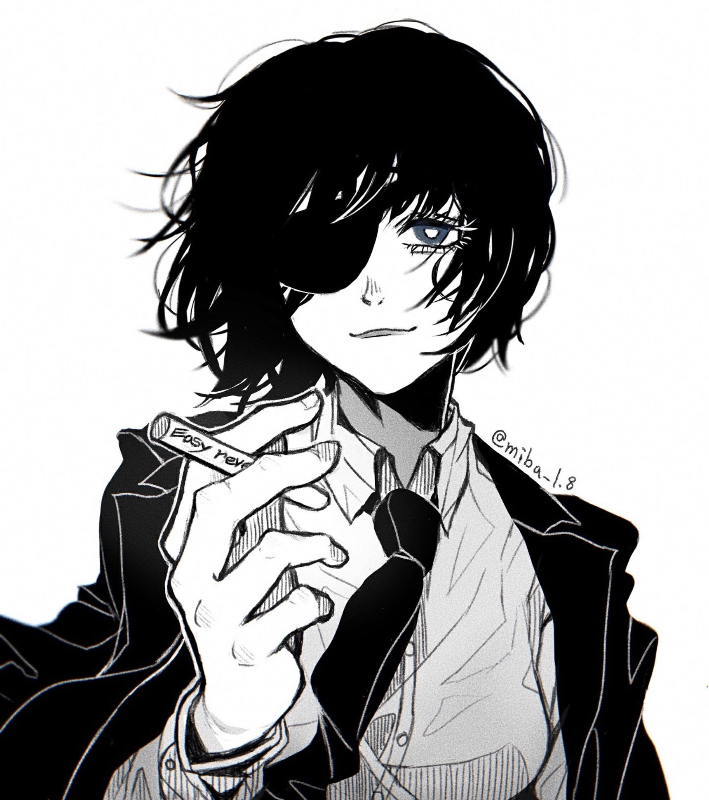 Himeno |
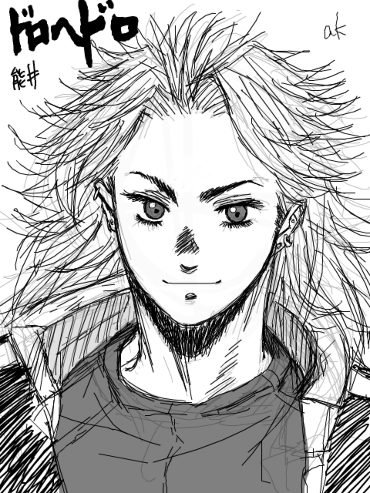 Noi |
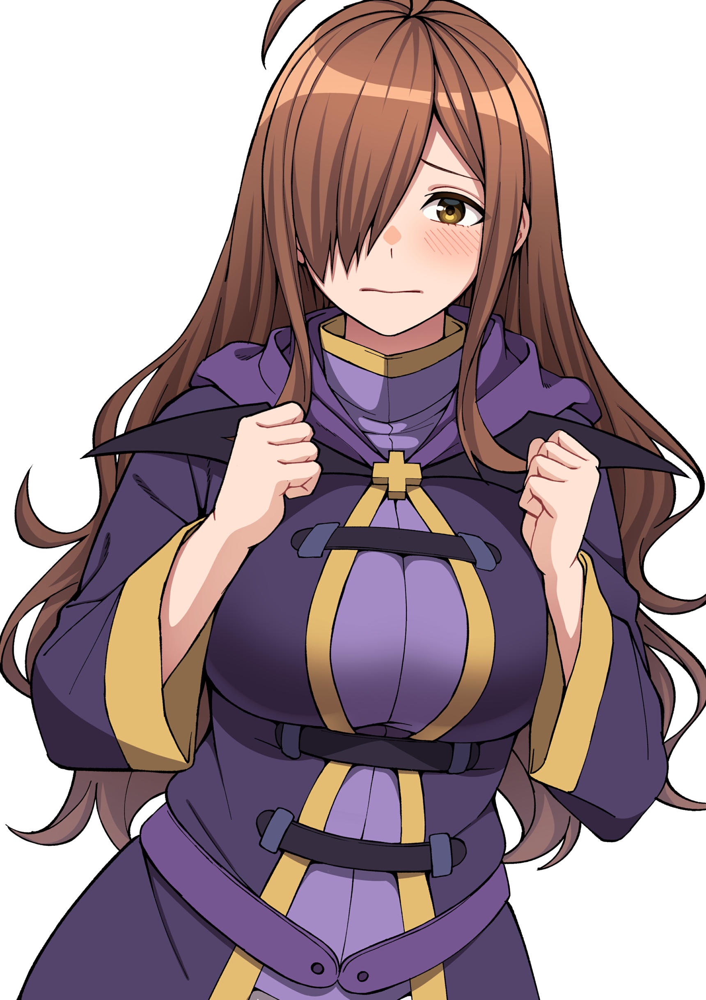 Wiz |
 Alma Armas |
| 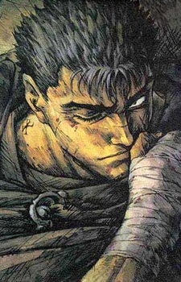 Guts |
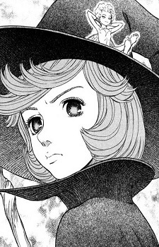 Schierke |
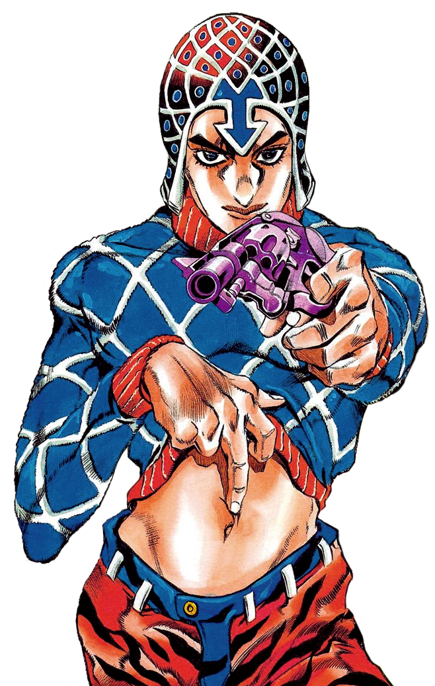 Mista |
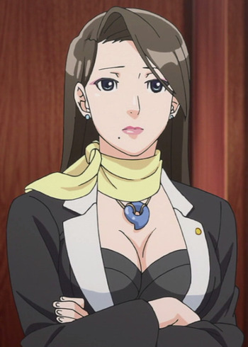 Mia Fey |
Characters List
FGC: I-No, Giovanna, Leo Whitefang
Anime: >Any golden boy character
>Anime & Manga: >Any golden boy character Kagura, Yomi, Sasaki, Akane
>Games: FGC, Persona Character
>Series: Lupin III[Jigen], Jujutsu Kaisen[Todo], Trigun[Milly], Jojo's[Mista], Cowboy Bebop[Faye], Samurai Champloo[Fu]
>Manga:
>
\Currently Viewing/
>Reading: Western esotericism: A guide for the perplexed; Monkey>Manga: Berserk, Sakamoto Days
>Watching: CyberSix, Dungeon Meshi
>Playing Signalis -> P3R
Book List - 1 chapter per day or 1 book per 2 weeks >Selection:
2024 Games List
>Signalis
>Persona 3 Reload
>Risk of Rain Returns
>Yakuza Kiwami 1
>Elden Ring
>Dragon Quest XI
>Nier Replicant
>FF7R
\Favorites/
Music{kind=link}
>King Gizzard and The Lizard Wizard
>Tupperware Remix Party
>The Midnight
>Al Stewart - Year of the Cat
Video Games - Chart
{kind=link}
>Abzu
>Ori and the Will of the Wisps
>Va-11 Hall-A
>Bomb Rush Cyberfunk
>Cave Story
>Risk of Rain 2
>Nier Automata
>Firewatch
Anime - Chart
{kind=link}
>Fullmetal Alchemist Brotherhood
>Cowboy Bebop
>Samurai Champloo
>Gurren Lagann
>Azumanga Daioh
>Lupin III
>FLCL
>Tatami Galaxy
Manga
>Yotsuba&
>One Piece
>Blame!
>Berserk
>Girls Last Tour
>One-Punch Man
>DanDaDan
MyAnimeList: Anime
>Cowboy Bebop
>Samurai Champloo
>FLCL
>Golden Boy
>Gurren Lagann
>Fullmetal Alchemist Brotherhood
>Inferno Cop
>Apothecary Diaries
>Neon Genesis Evangelion
>Azumanga Daiou
>Initial D
>Lupin III
>Ghost in the Shell: Stand Alone Complex
>Black Lagoon
>Lupin III
>Baccano
>Monogatari Series
>Tatami Galaxy
>Panty & Stocking with Garterbelt
>Steins Gate
>Persona 4 The Animation
>Kill La Kill
>Jojo's Bizarre Adventure
>Re:Creators
>Made in Abyss
>Yuru Camp
>Tsurezure Children
>Girls Last Tour
>Trigun
>Naruto
>One Punch Man
>Devilman Crybaby
>Land of the Lustrous
>Bunny Girl Senpai
>Lucky Star
>Angel Beats
>Monster Musume
>Grand Blue
>Dorohedoro
>Konosuba
>Dr. Stone
>Jujutsu Kaisen
>Bleach: The Thousand Year Blood War
Movie
>Promare
>Evangelion Rebuilds 1.0, 2.0 & 3.0
>Evangelion 3.0+1.0
>Ghost in the Shell
>Akira
>Redline
>Interstella 5555
>Dragon Ball Super: Broly
>Dragon Ball Super Heroes
>Your Name
>Night Is Short Walk On Girl
Studio Ghibli
>Porco Rosso
>Princess Mononoke
>Kiki's Delivery Service
>My Neighbor Totoro
>Spirited Away
MyAnimeList: Manga
>One Piece
>Berserk
>Blame!
>Yotsuba&
>Eyeshield 21
>Jojo's Parts 7 & 8
>Girls' Last Tour
>Grappler Baki
>Tomo-chan Is A Girl
>Teppuu
>Chainsaw Man
>Jujutsu Kaisen
>Dungeon Meshi
>DanDaDan
>Shimeji Simulation
>Sun-Ken Rock
>Smoking Behind the Supermarket with You
>Dragon Ball
>Bleach
>One-Punch Man
>Monster Musume
The Up-Next List: Art I'd Like to View (and ideally finish)
>20th century boys
>Monster
>Golden Kamuy
>Grand Blue (Manga)
>Hajime No Ippo
>Great Teacher Onizuka
>Sakamoto Days
>Sayonara Eri
>Frieren
>Vinland Saga
>Vagabond
>Yu Yu Hakusho
>Mushishi
!>Slam Dunk